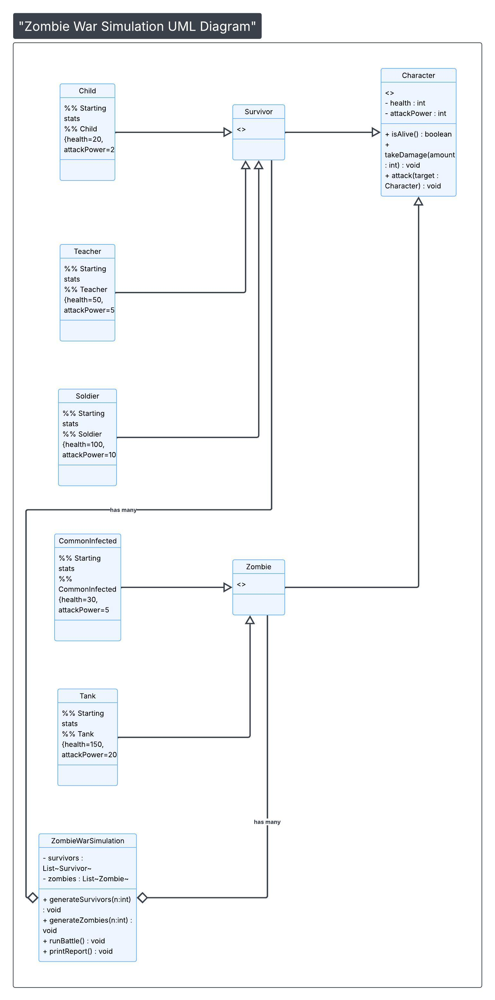

Zombie War Simulation

Java-based combat simulation executed in IntelliJ IDEA, demonstrating class interactions, randomized battle logic, and console-based output.
Designed and implemented a Java-based object-oriented combat simulation featuring survivors, zombies, and weapon systems. The application uses class-based architecture, enums, and UML-driven design to model complex interactions and game logic.
System Design (UML)

UML class diagram illustrating relationships between survivors, zombies, weapons, and core simulation components.
Technologies Used
- Java
- Object-Oriented Programming
- UML Design
- Enums and Classes
Features
- Multiple survivor and zombie interactions
- Weapon system with accuracy and damage values
- Battle simulation logic
- Organized multi-file Java structure
What I Learned
This project strengthened my ability to design and implement object-oriented systems using multiple interacting classes. I gained experience with UML modeling, enum-based design, and structuring scalable Java applications. I also improved my collaboration skills through team-based development and version control using Git.